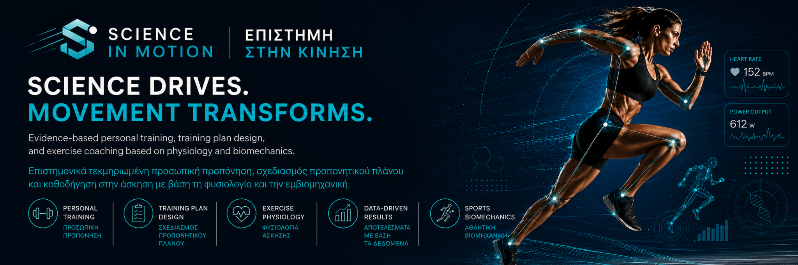

Education
PhD Exercise Physiology & Biochemistry • MSc Sports Biomechanics • BSc Astronomy • MBA (Finance pathway)

Επιστήμη της Άσκησης · Προσωπική Προπόνηση · Εμβιομηχανική
Εξατομικευμένη καθοδήγηση με βάση τους στόχους, το επίπεδο φυσικής κατάστασης, τη φυσιολογία της άσκησης και τη βιομηχανική της κίνησης.
Science-driven coaching
Το Science in Motion συνδυάζει εξατομικευμένη προπόνηση, αξιολόγηση φυσικής κατάστασης, ανάλυση κίνησης και πρακτική καθοδήγηση για βιώσιμα αποτελέσματα.
About
I'm an exercise physiologist and sport scientist with a PhD in Exercise Physiology and Biochemistry. My research and professional practice focus on understanding the mechanisms of how the human body responds and adapts to training, as well as optimizing athletic performance through evidence-based fitness protocols.
I hold the position of Academic Director for the BSc Sport Science with Physical Education programme, with the goal of educating and scientifically training the next generation of professionals in the field. Alongside my academic work, I provide personal training and consulting services to anyone wanting to exercise, athletes, fitness professionals, and individuals seeking to maximize their performance or improve their health through scientific, personalized approaches.
Credentials & Expertise
PhD Exercise Physiology & Biochemistry • MSc Sports Biomechanics • BSc Astronomy • MBA (Finance pathway)
Academic Director & Programme Leader, BSc Sport Science with Physical Education
Exercise physiology, metabolic adaptation, training response, athletic performance
Business analytics, financial modeling, systems thinking, organizational strategy
Services
Επίλεξε την υπηρεσία που ταιριάζει στον στόχο σου. Κάθε πλάνο ξεκινά με αξιολόγηση και προσαρμόζεται στην πρόοδό σου.
Method
Στόχοι, ιστορικό, επίπεδο φυσικής κατάστασης, στάση σώματος και βασικοί δείκτες κίνησης.
Σχεδιασμός άσκησης με προοδευτικότητα, τεχνική, αποκατάσταση και μετρήσιμα κριτήρια.
Τακτική ανατροφοδότηση, αναπροσαρμογές και έλεγχος αποτελεσμάτων με βάση δεδομένα.